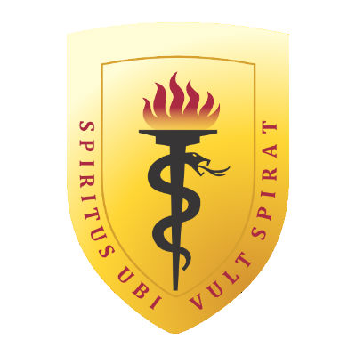
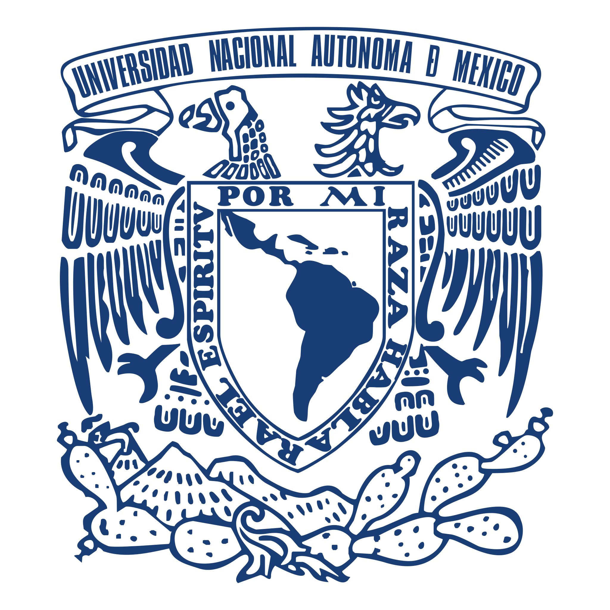

2024
2024
Worked in the Comparative Genomics team at Senckenberg Frankfurt, developing algorithms to
resolve genome-wide annotations produced by orthology inference-based methods using
long-read transcriptomics.
2024

Right after graduation, I worked as Bioinformatics Assitant with Ph.D. Mirko Zimic
at UPCH.
Here, we studied the effect of the thermodynamic pressure on GC-related DNA mutations
using over 60,000 E. coli generations.
2023

During my last year at UNMSM, I worked as an Oncology Bioinformatics Intern at
LIIGH-UNAM, where I
investigated human/dog prostate cancer transcriptional parallelisms.
2018 - 2023

DVM at the National University of San Marcos. Graduated with the highest honors (Summa Cum Laude)
after holding the 1st place during 6 consecutive years. Published 2 papers and 3 bioinformatic tools.
Won 1 international congress and was recognized by the Pan American Veterinary Association.